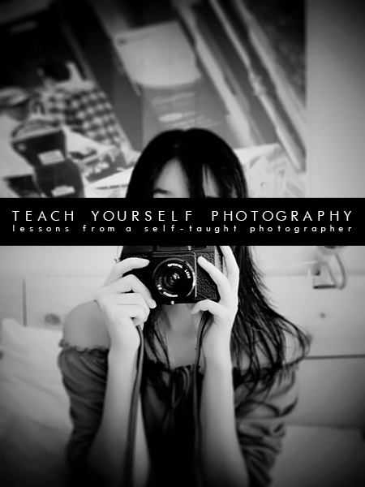

Tutorials

Welcome to JFotography's tutorial section and e-book:
Teach Yourself Photography - lessons from a self-taught photographer.
This section provides various tutorials in an e-book format so you can learn how to take great photos. Tutorials range from finding the right camera for you to basic post-editing techniques to in-depth protocols for specific photo set-ups.
This e-book is provided to you for free. If you've enjoyed this e-book or use these tutorials for your photos, please credit JFotography and link back to this page so others can gain access to these tutorials as well.
NEW: These tutorials are now available in pdf form for easier viewing. (note: due to the web to pdf conversion, some features such as animations, links, and enlargements do not work.)
This section provides various tutorials in an e-book format so you can learn how to take great photos. Tutorials range from finding the right camera for you to basic post-editing techniques to in-depth protocols for specific photo set-ups.
This e-book is provided to you for free. If you've enjoyed this e-book or use these tutorials for your photos, please credit JFotography and link back to this page so others can gain access to these tutorials as well.
NEW: These tutorials are now available in pdf form for easier viewing. (note: due to the web to pdf conversion, some features such as animations, links, and enlargements do not work.)
Table of Contents
- Words from the Author
- Preface
- Tips and Advice - for photography and for life
- Free Your Knowledge - why I share what I know and why you should too
- Composition Basics
- Composition Rules - explained through example
- Breaking the Rules - explained through example
- DIYs (helping you do it yourself)
- DIY Backdrops - simple backdrop solutions with things from around your home
- DIY Light Tent - all you need is paper
- Homemade TLR Camera - a practical introduction to optics and how to build your own TLR camera
- How-Tos (in-depth and detailed protocols)
- Set up for bubbly photos
- Light painting with portraiture
- Levitate small objects
- Photograph eye reflections
- Forced perspective with bokeh
- Tips and Advice - for photography and for life
- Free Your Knowledge - why I share what I know and why you should too
- Composition Rules - explained through example
- Breaking the Rules - explained through example
- DIY Backdrops - simple backdrop solutions with things from around your home
- DIY Light Tent - all you need is paper
- Homemade TLR Camera - a practical introduction to optics and how to build your own TLR camera
- Set up for bubbly photos
- Light painting with portraiture
- Levitate small objects
- Photograph eye reflections
- Forced perspective with bokeh